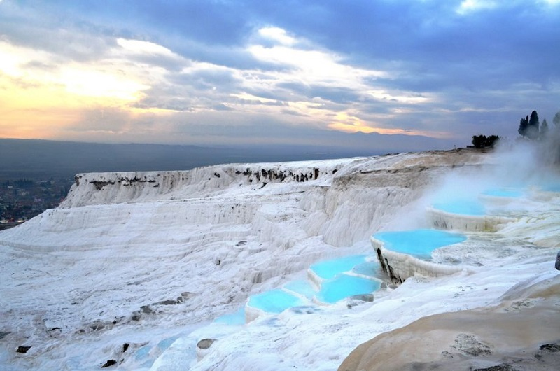

Thermal Springs, Pamukkale, Turkey
Take a trip to Turkey’s inner Aegean region near the River Menderes Valley and you’ll encounter Pamukkale’s thermal springs. People have bathed in these hot mineral-saturated waters for thousands of years, dubbing the area Pamukkale, or cotton castle. The scallop-shaped basins of water and frozen waterfalls decorate the area’s cliffside. Here, the spring water is hot and high in calcium, magnesium sulfrate and bicarbonate. The Pamukkale hot springs flow at a rate of 400 liters per second, with their mineral-saturated flows forming its hollow, circular basins all the while.
Back